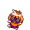

#238 SMOOCHUM

TYPE:
ICE/PSYCHIC
Pokédex Description
Pokémon Gold/Silver:
Your lips are the most sensitive part of your body. He always uses them to examine things.
Pokémon Crystal:
Its lips are the most sensitive part of its body. He uses them to try to identify objects.
Base Stats
| Health | Attack | Defense | Speed | At. Esp. | Def. Esp. |
|---|---|---|---|---|---|
| 45 | 30 | 15 | 65 | 85 | 65 |
Max Stats Level 50
| Health | Attack | Defense | Speed | At. Esp. | Def. Esp. |
|---|---|---|---|---|---|
| 105 - 151 | 35 - 81 | 20 - 66 | 70 - 116 | 90 - 136 | 70 - 116 |
Max Stats Level 100
| Health | Attack | Defense | Speed | At. Esp. | Def. Esp. |
|---|---|---|---|---|---|
| 200 - 293 | 65 - 158 | 35 - 128 | 135 - 228 | 175 - 268 | 135 - 228 |
Movements by level
Level - Attack - Type - Power - Accuracy - PP - Description
1 - GHOST LONG - 20 - 100 - 30 - Attack that can paralyze.
1 - NORMAL DESTROYER - 40 - 100 - 35 - Hit with the legs or tail.
9 - NORMAL SWEET KISS - 75 - 10 - Attack that causes confusion.
13 - SNOW DUST - ICE - 40 - 100 - 25 - Attack that can freeze.
21 - PSYCHIC CONFUSION - 50 - 100 - 25 - Attack that can confuse.
25 - NORMAL SINGLE - 55 - 15 - It can put the enemy to sleep.
33 - EVIL EYE - NORMAL - 100 - 5 - Prevents fleeing or changing.
37 - PSYCHIC - PSYCHIC - 90 - 100 - 10 - Attack that can lower DEF. ESP.
45 - NORMAL DEADLY SONG - 100 - 5 - You and your rival fall in 3 turns.
49 - BLIZZARD - ICE - 120 - 70 - 5 - Attack that can freeze the opponent.
1 - NORMAL DESTROYER - 40 - 100 - 35 - Hit with the legs or tail.
9 - NORMAL SWEET KISS - 75 - 10 - Attack that causes confusion.
13 - SNOW DUST - ICE - 40 - 100 - 25 - Attack that can freeze.
21 - PSYCHIC CONFUSION - 50 - 100 - 25 - Attack that can confuse.
25 - NORMAL SINGLE - 55 - 15 - It can put the enemy to sleep.
33 - EVIL EYE - NORMAL - 100 - 5 - Prevents fleeing or changing.
37 - PSYCHIC - PSYCHIC - 90 - 100 - 10 - Attack that can lower DEF. ESP.
45 - NORMAL DEADLY SONG - 100 - 5 - You and your rival fall in 3 turns.
49 - BLIZZARD - ICE - 120 - 70 - 5 - Attack that can freeze the opponent.
Movements by MT/MO
MT/MO - Attack - Type - Power - Accuracy - PP - Description
MT01 - DYNAMIC FIST - FIGHT - 100 - 50 - 5 - Attack that always confuses.
MT03 - DAMN??? - 100 - 10 - It doesn't work the same with ghosts.
MT06 - TOXIC - POISON - 85 - 10 - Poison that increases the damage.
MT09 - MORE PSYCHE - NORMAL - 100 - 10 - Copy car changes. of the rival.
MT10 - HIDDEN POWER - NORMAL - - 100 - 15 - The power varies depending on the POKÉMON.
MT12 - SWEET AROMA - NORMAL - 100 - 20 - Reduces enemy evasion.
MT13 - SNORING - NORMAL - 40 - 100 - 15 - It is only used when you sleep.
MT14 - BLIZZARD - ICE - 120 - 70 - 5 - Attack that can freeze the opponent.
MT16 - WIND ICE - ICE - 55 - 95 - 15 - Icy attack that lowers SPEED.
MT17 - PROTECTION - NORMAL - 100 - 10 - Thwart the attack. It can fail.
MT18 - RAIN DANCE - WATER - 90 - 5 - Improves water attacks for 5 turns.
MT20 - Stamina - NORMAL - 100 - 10 - Always leave 1 PS, at least.
MT21 - FRUSTRATION - NORMAL - - 100 - 20 - Based on the lack of loyalty.
MT27 - REVERSE - NORMAL - - 100 - 20 - Attack based on loyalty.
MT29 - PSYCHIC - PSYCHIC - 90 - 100 - 10 - Attack that can lower DEF. ESP.
MT30 - SHADOW BALL - GHOST - 80 - 100 - 15 - Attack that can lower DEF. ESP.
MT31 - SLAP-MUD - GROUND - 20 - 100 - 10 - Reduces enemy accuracy.
MT32 - DOUBLE TEAM - NORMAL - 100 - 15 - Improves evasion skill.
MT33 - ICE FIST - ICE - 75 - 100 - 15 - Icy punch. Can freeze.
MT34 - WIG - NORMAL - 90 - 15 - Causes confusion and raises ATTACK.
MT35 - SLEEPWALKER - NORMAL - 100 - 10 - Attack randomly while you sleep.
MT42 - DREAM EATER - PSYCHIC - 100 - 100 - 15 - Steal HP from a sleeping victim.
MT44 - REST - PSYCHIC - 100 - 10 - Sleep 2 shifts for full cure.
MT45 - ATTRACTION - NORMAL - 100 - 15 - Fall in love with the opposite gender.
MT46 - SINIEST THIEF. - 40 - 100 - 10 - Attack that can steal an object.
MT50 - NIGHTMARE - GHOST - 100 - 15 - The sleeper loses 1/4 HP per turn.
MT03 - DAMN??? - 100 - 10 - It doesn't work the same with ghosts.
MT06 - TOXIC - POISON - 85 - 10 - Poison that increases the damage.
MT09 - MORE PSYCHE - NORMAL - 100 - 10 - Copy car changes. of the rival.
MT10 - HIDDEN POWER - NORMAL - - 100 - 15 - The power varies depending on the POKÉMON.
MT12 - SWEET AROMA - NORMAL - 100 - 20 - Reduces enemy evasion.
MT13 - SNORING - NORMAL - 40 - 100 - 15 - It is only used when you sleep.
MT14 - BLIZZARD - ICE - 120 - 70 - 5 - Attack that can freeze the opponent.
MT16 - WIND ICE - ICE - 55 - 95 - 15 - Icy attack that lowers SPEED.
MT17 - PROTECTION - NORMAL - 100 - 10 - Thwart the attack. It can fail.
MT18 - RAIN DANCE - WATER - 90 - 5 - Improves water attacks for 5 turns.
MT20 - Stamina - NORMAL - 100 - 10 - Always leave 1 PS, at least.
MT21 - FRUSTRATION - NORMAL - - 100 - 20 - Based on the lack of loyalty.
MT27 - REVERSE - NORMAL - - 100 - 20 - Attack based on loyalty.
MT29 - PSYCHIC - PSYCHIC - 90 - 100 - 10 - Attack that can lower DEF. ESP.
MT30 - SHADOW BALL - GHOST - 80 - 100 - 15 - Attack that can lower DEF. ESP.
MT31 - SLAP-MUD - GROUND - 20 - 100 - 10 - Reduces enemy accuracy.
MT32 - DOUBLE TEAM - NORMAL - 100 - 15 - Improves evasion skill.
MT33 - ICE FIST - ICE - 75 - 100 - 15 - Icy punch. Can freeze.
MT34 - WIG - NORMAL - 90 - 15 - Causes confusion and raises ATTACK.
MT35 - SLEEPWALKER - NORMAL - 100 - 10 - Attack randomly while you sleep.
MT42 - DREAM EATER - PSYCHIC - 100 - 100 - 15 - Steal HP from a sleeping victim.
MT44 - REST - PSYCHIC - 100 - 10 - Sleep 2 shifts for full cure.
MT45 - ATTRACTION - NORMAL - 100 - 15 - Fall in love with the opposite gender.
MT46 - SINIEST THIEF. - 40 - 100 - 10 - Attack that can steal an object.
MT50 - NIGHTMARE - GHOST - 100 - 15 - The sleeper loses 1/4 HP per turn.
Pok3dex 2gen Lite By Professor Dog.